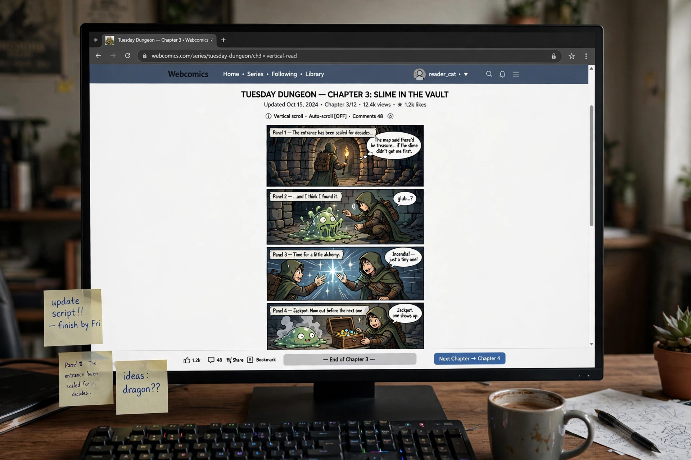

Webcomics

Webcomics (also known as online comics or Internet comics) are comics published on websites or mobile apps. Because they bypass print gatekeepers, webcomics range from traditional comic strips and long-form graphic narratives to experimental works using the "infinite canvas" — theorised by Scott McCloud — animation, sound and interactivity. Many begin as independent, creator-owned projects distributed free of charge and supported by advertising, merchandise, print collections, crowdfunding or subscriptions.
History
Comics appeared on early networks such as CompuServe in the 1980s; Hans Bjordahl's Where the Buffalo Roam (begun 1991 on Usenet) is among the earliest online strips. The growth of the World Wide Web in the mid-1990s brought pioneering webcomics such as Doctor Fun (1993) and gaming strips like PvP (1998) and Penny Arcade (1998). In the 2000s, titles including xkcd, The Order of the Stick, Homestuck and Dinosaur Comics demonstrated the medium's reach, while South Korea's vertical-scrolling "webtoon" format, popularised by platforms such as Naver Webtoon and Tapas, became a global industry in the 2010s.
Formats and business models
Webcomics adopt many forms: gag-a-day strips, serialised stories, journal comics and vertical-scroll episodes. Creators monetise through advertising, Patreon-style patronage, Kickstarter campaigns for print editions, merchandise and licensing; some webcomics have crossed into print comic books, animation and film. Platform consolidation — with Webtoon and similar services commissioning original series — has professionalised parts of the field while independent self-publishing remains widespread.
Characteristics
Freed from page dimensions, webcomics can use long vertical layouts, scrolling reveals, hyperlinks and multimedia. They also permit direct creator–reader interaction via comments and social media, and niche subjects can sustain audiences large enough for viability despite being too small for print syndication.